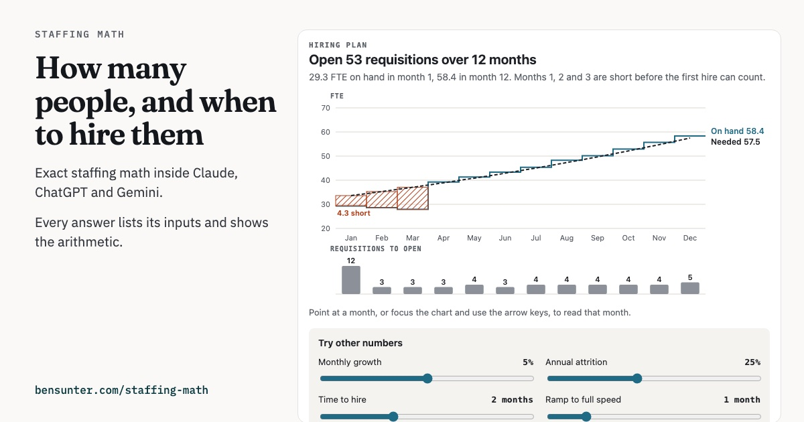
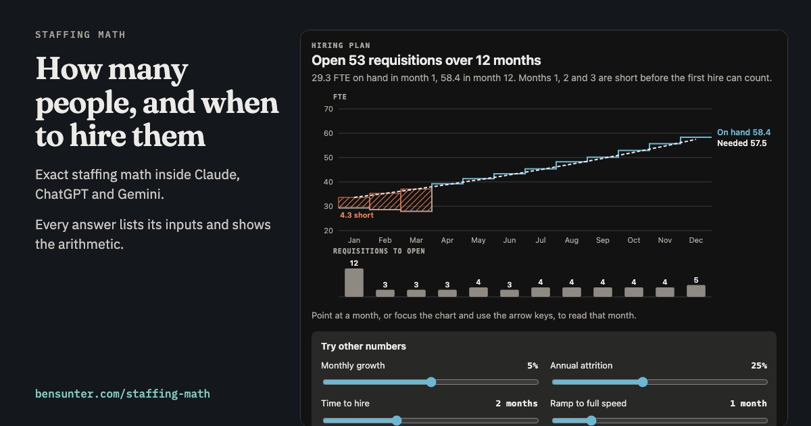

Staffing Math adds three staffing calculations to Claude, ChatGPT and Gemini. Ask in plain English how many people a workload needs or when to hire, and the assistant runs the calculation through this tool. Every answer lists its inputs as given or assumed and shows the arithmetic, so you can check it with a calculator.


What it answers
- How many people a workload needs. 4,000 cases a week at 12 minutes each, with 30% shrinkage, 85% occupancy and 40-hour weeks, is 33.61 FTE. That's 34 people.
- When to hire. If that volume grows 5% a month, the plan opens 30 requisitions over 12 months, 4 of them in month 1. With 30 people today, 25% attrition and a month of ramp, it's 53, and the first three months run short before any new hire can count.
- How many agents a queue needs. 200 calls an hour at 5 minutes each needs 21 agents to answer 80% within 20 seconds. One fewer answers 72.9%. At 30% shrinkage that's 30 people on the schedule.
In Claude and ChatGPT the hiring plan also draws itself in the chat: FTE needed against FTE on hand, the short months hatched, requisitions by month, and sliders for growth, attrition, time to hire, ramp and shrinkage that rerun the plan.
Add it
It's free and needs no account. It doesn't save your numbers; it only counts calls by app. The address is:
https://staffing-math.vercel.app/mcp
- ChatGPT: open Plugins, then Add, then Add custom MCP server. Paste the address and set authentication to No authentication.
- Gemini: open Connectors, then Custom. Paste the address.
- Claude: the Claude Desktop extension and the Claude Code plugin install from GitHub.
Then ask something like: I handle 4,000 cases a week at 12 minutes each with 30% shrinkage. How many people do I need, and what's my hiring plan if volume grows 5% a month?
Where the numbers come from
The calculations are the engine behind my Operating Model Simulator, copied in unchanged along with its own tests. Tests check each tool against hand calculations and against an independently written Erlang C. The code is open source under the MIT license on GitHub.
Limits
It plans one team at a time and leaves out cost and budget. Erlang C assumes nobody hangs up while waiting, so staff the busiest hour. When attrition or current headcount isn't given, the answer says what it assumed, and for attrition it also shows the plan at 15% and 30% a year.
Help and problems
Email sunterbb@gmail.com with what you asked and what came back.